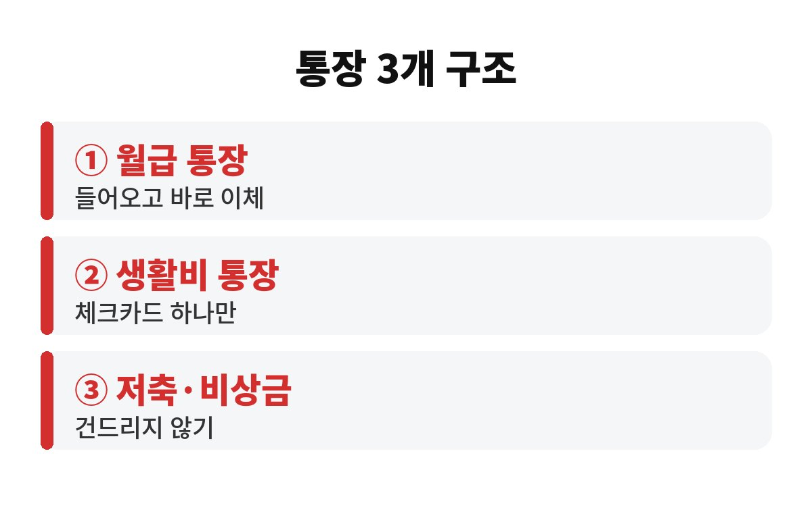
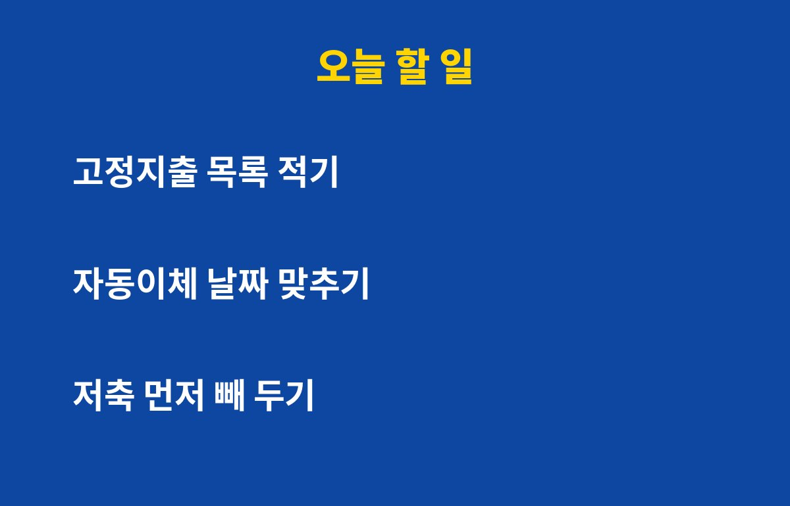

월급 통장 쪼개기는 통장 3개만 있으면 시작할 수 있고, 이것만으로도 매달 흐지부지 새는 돈을 눈에 띄게 줄일 수 있습니다. 월급이 들어오자마자 어디론가 사라지는 직장인이라면, 통장을 몇 개로 어떻게 나눠야 하는지 궁금하시죠?
월급이 들어오면 카드값, 월세, 통신비, 구독료가 한꺼번에 빠져나가요. 그러고 나서 통장에 남은 돈이 '내 돈'인 줄 알고 쓰다 보면 월말에 늘 빠듯해집니다. 문제는 쓰는 금액이 아니라 돈이 한 통장에 섞여 있다는 것이에요.
한 통장에 모든 돈이 섞여 있으면 지금 얼마를 써도 되는지 알 수가 없습니다. 저축할 돈과 쓸 돈, 내야 할 돈이 구분되지 않으니까요. 월급 통장 쪼개기는 이 돈의 역할을 미리 나눠 주는 가장 간단한 방법입니다.
가장 많이 쓰는 구조는 월급 통장, 생활비 통장, 저축 통장의 세 가지예요. 아래 표처럼 역할을 딱 나눠 보세요.
| 통장 | 역할 | 규칙 |
| 월급 통장 | 월급이 들어오는 곳, 고정지출 출금 | 월급날 바로 다른 통장으로 이체 |
| 생활비 통장 | 식비·교통비 등 한 달 쓸 돈 | 체크카드 하나만 연결 |
| 저축·비상금 통장 | 적금, 투자, 비상금 | 급하지 않으면 건드리지 않기 |
월급 통장은 '통로'라고 생각하시면 편해요. 월급이 들어오면 월세나 보험료 같은 고정지출이 나가고, 저축할 돈은 곧바로 저축 통장으로 보내고, 남은 돈을 생활비 통장으로 옮깁니다.
많이들 하는 실수가 '쓰고 남은 돈을 저축'하는 거예요. 그러면 거의 남지 않습니다. 순서를 뒤집어서 월급날 저축부터 먼저 빼 두는 것이 핵심이에요.
비율은 사람마다 다르니 정해진 정답은 없어요. 처음에는 부담 없는 금액으로 시작하고, 몇 달 지나 여유가 보이면 조금씩 늘려 가는 방식이 오래갑니다. 무리해서 큰 비율로 시작하면 한두 달 뒤 생활비가 모자라 저축을 깨게 되거든요. 그러니 '이 정도면 안 아프다' 싶은 금액에서 출발하세요.
그리고 비상금은 따로 두는 걸 권해요. 갑자기 병원비나 수리비가 나가도 저축 통장을 깨지 않아도 되니까요. 이 안전판이 있어야 쪼개기 습관이 중간에 무너지지 않습니다.
통장을 나눠 놓고도 실패하는 경우가 있어요. 대표적인 이유는 세 가지입니다. 첫째, 생활비 통장에 카드를 여러 장 연결해 놓는 경우예요. 둘째, 자동이체 날짜가 제각각이라 월급날 전에 돈이 빠져나가 잔액이 마이너스가 되는 경우예요. 셋째, 쓰지 않는 구독료가 그대로 나가고 있는 경우죠.
그래서 처음 한 번은 고정지출을 전부 적어 보는 게 좋습니다. 월세, 보험료, 통신비, 구독 서비스를 한 장에 모아 놓으면 의외로 잊고 있던 항목이 한두 개 나와요. 나갈 날짜를 월급날 직후로 맞춰 두면 잔액 걱정도 줄어듭니다.

어렵게 생각하지 말고 세 가지만 하세요. 먼저 고정지출 목록을 적고, 다음으로 생활비 전용 체크카드 한 장을 정하고, 마지막으로 월급날 자동이체로 저축 금액을 먼저 보내 놓는 거예요. 앱에서 10분이면 끝납니다.

월급 통장 쪼개기는 거창한 재테크가 아니라 돈에 이름표를 붙여 주는 습관이에요. 이번 달 월급날부터 한번 시작해 보면 어떨까요? 여러분은 지금 통장이 몇 개인가요? 도움이 되셨다면 구독해 주세요.
※ 본 글은 일반적인 정보 제공이며 투자 권유가 아닙니다.